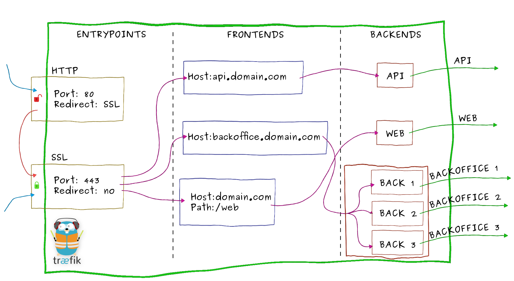

Traefik : Installation et Configuration
Version des outils
| Os / Tool | Version |
|---|---|
| Gitlab | 1.7.X |
| Docker | 18.09.6 |
Todo
N/A
Note en vrac
Avant propos
Traefik is a modern HTTP reverse proxy and load balancer that makes deploying microservices easy. Traefik integrates with your existing infrastructure components (Docker, Swarm mode, Kubernetes, Marathon, Consul, Etcd, Rancher, Amazon ECS, ...) and configures itself automatically and dynamically. Pointing Traefik at your orchestrator should be the only configuration step you need. .
Getting Started
Exécuter simplement le docker-compose suivant :
version: '3'
services:
reverse-proxy:
image: traefik # The official Traefik docker image
command: --api --docker # Enables the web UI and tells Traefik to listen to docker
ports:
- "80:80" # The HTTP port
- "8080:8080" # The Web UI (enabled by --api)
volumes:
- /var/run/docker.sock:/var/run/docker.sock # So that Traefik can listen to the Docker events
whoami:
image: containous/whoami # A container that exposes an API to show its IP address
labels:
- "traefik.frontend.rule=Host:whoami.docker.localhost"
Testons avec curl :
En scalant :
Features
- Continuously updates its configuration (No restarts!)
- Supports multiple load balancing algorithms
- Provides HTTPS to your microservices by leveraging Let's Encrypt (wildcard certificates support)
- Circuit breakers, retry
- High Availability with cluster mode (beta)
- See the magic through its clean web UI
- Websocket, HTTP/2, GRPC ready
- Provides metrics (Rest, Prometheus, Datadog, Statsd, InfluxDB)
- Keeps access logs (JSON, CLF)
- Fast
- Exposes a Rest API
- Packaged as a single binary file (made with ❤️ with go) and available as a tiny official docker image
Supported Providers
- Docker / Swarm mode
- Kubernetes
- Mesos / Marathon
- Rancher (API, Metadata)
- Azure Service Fabric
- Consul Catalog
- Consul / Etcd / Zookeeper / BoltDB
- Eureka
- Amazon ECS
- Amazon DynamoDB
- File
- Rest
Basics
Quick overview

Zoom into traefik

- Incoming requests end on entrypoints, as the name suggests, they are the network entry points into Traefik (listening port, SSL, traffic redirection...).
- Traffic is then forwarded to a matching frontend. A frontend defines routes from entrypoints to backends. Routes are created using requests fields (Host, Path, Headers...) and can match or not a request.
- The frontend will then send the request to a backend. A backend can be composed by one or more servers, and by a load-balancing strategy.
- Finally, the server will forward the request to the corresponding microservice in the private network.
Entrypoints
Entrypoints are the network entry points into Traefik. They can be defined using:
- a port (80, 443...)
- SSL (Certificates, Keys, authentication with a client certificate signed by a trusted CA...)
- redirection to another entrypoint (redirect HTTP to HTTPS)
Frontends
A frontend consists of a set of rules that determine how incoming requests are forwarded from an entrypoint to a backend.
Backends
A backend is responsible to load-balance the traffic coming from one or more frontends to a set of http servers.
Configuration
Traefik's configuration has two parts:
- The static Traefik configuration which is loaded only at the beginning.
- The dynamic Traefik configuration which can be hot-reloaded (no need to restart the process).
Config
Docker Provider
################################################################
# Docker Provider
################################################################
# Enable Docker Provider.
[docker]
# Docker server endpoint. Can be a tcp or a unix socket endpoint.
#
# Required
#
endpoint = "unix:///var/run/docker.sock"
# Default base domain used for the frontend rules.
# Can be overridden by setting the "traefik.domain" label on a container.
#
# Optional
#
domain = "docker.localhost"
# Enable watch docker changes.
#
# Optional
#
watch = true
# Expose containers by default in Traefik.
# If set to false, containers that don't have `traefik.enable=true` will be ignored.
#
# Optional
# Default: true
#
exposedByDefault = true
# Use the IP address from the binded port instead of the inner network one.
#
# In case no IP address is attached to the binded port (or in case
# there is no bind), the inner network one will be used as a fallback.
#
# Optional
# Default: false
#
usebindportip = true
# Use Swarm Mode services as data provider.
#
# Optional
# Default: false
#
swarmMode = false
# Polling interval (in seconds) for Swarm Mode.
#
# Optional
# Default: 15
#
swarmModeRefreshSeconds = 15
On container
| Label | Description |
|---|---|
| traefik.docker.network | Overrides the default docker network to use for connections to the container. |
| traefik.domain | Sets the default base domain for the frontend rules. For more information, check the Container Labels section's of the user guide "Let's Encrypt & Docker". |
| traefik.enable=false | Disables this container in Traefik. |
| traefik.port=80 | Registers this port. Useful when the container exposes multiples ports. |
| traefik.tags=foo,bar,myTag | Adds Traefik tags to the Docker container/service to be used in constraints. |
| traefik.protocol=https | Overrides the default http protocol. |
| traefik.weight=10 | Assigns this weight to the container. |
| traefik.backend=foo | Overrides the container name by foo in the generated name of the backend. |
| traefik.frontend.rule=EXPR | Overrides the default frontend rule. Default: Host:{containerName}.{domain} or Host:{service}.{project_name}.{domain} if you are using docker-compose. |
On containers with Multiple Ports (segment labels)
| Label | Description |
|---|---|
| traefik.<segment_name>.backend=BACKEND | Same as traefik.backend |
| traefik.<segment_name>.domain=DOMAIN | Same as traefik.domain |
| traefik.<segment_name>.port=PORT | Same as traefik.port |
| traefik.<segment_name>.protocol=http | Same as traefik.protocol |
| traefik.<segment_name>.weight=10 | Same as traefik.weight |
| traefik.<segment_name>.frontend.rule=EXP | Same as traefik.frontend.rule |
Source
Traefik
Traefik Documentation
Traefik Docker
Traefik Security Challenge with the Docker Socket